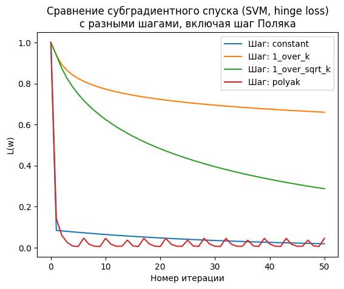
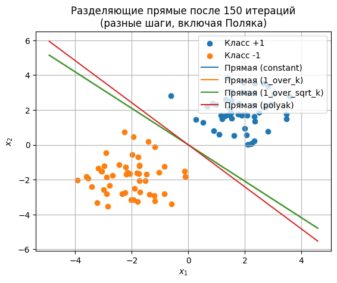

import numpy as np
import matplotlib.pyplot as plt
# --------------------- 1. Генерация данных ---------------------
np.random.seed(42)
N = 100 # число объектов
X1 = np.random.randn(N//2, 2) + np.array([2, 2]) # смещаем один класс
X2 = np.random.randn(N//2, 2) + np.array([-2, -2]) # смещаем другой класс
X = np.vstack([X1, X2]) # матрица объекты x признаки
y = np.hstack([np.ones(N//2), -np.ones(N//2)]) # метки классов: +1, -1
# Перемешаем всё вместе для наглядности
perm = np.random.permutation(N)
X = X[perm]
y = y[perm]
# --------------------- 2. Функция потерь (объектив) ---------------------
def hinge_svm_objective(w, X, y, lambd):
"""
Возвращает значение функционала:
L(w) = (lambda/2)*||w||^2 + (1/N)*sum( max(0, 1 - y_i * w^T x_i) ).
"""
margins = 1 - y * (X.dot(w))
hinge_losses = np.maximum(0, margins)
return (lambd/2)*np.sum(w**2) + np.mean(hinge_losses)
# --------------------- 3. Субградиент функционала ---------------------
def hinge_svm_subgradient(w, X, y, lambd):
"""
Возвращает субградиент g(w) для:
g(w) = lambda*w + (1/N)*sum( -y_i*x_i, если y_i*w^T x_i < 1 ).
"""
N = X.shape[0]
margins = 1 - y * (X.dot(w))
active_mask = (margins > 0).astype(float) # где hinge>0
# Суммируем -y_i*x_i по всем активным (margin>0)
grad_hinge = -(y * active_mask)[:, np.newaxis] * X
grad_hinge = grad_hinge.mean(axis=0)
g = lambd*w + grad_hinge
return g
# --------------------- 4. Субградиентный спуск ---------------------
def subgradient_descent(
X, y, lambd=0.01,
max_iter=150,
step_rule='constant',
c=1.0,
f_star=0.0
):
"""
Субградиентный спуск для SVM с hinge loss:
Параметры:
X, y : выборка
lambd : коэффициент регуляризации
max_iter : число итераций
step_rule : стратегия выбора шага:
- 'constant' -> alpha_k = c
- '1_over_k' -> alpha_k = c/k
- '1_over_sqrt_k' -> alpha_k = c/sqrt(k)
- 'polyak' -> alpha_k = (f(w_k) - f_star)/||g_k||^2
c : константа для шага (используется во всех, кроме 'polyak')
f_star : предполагаемый минимум (для 'polyak')
Возвращает:
w_history : список векторов w на каждой итерации
loss_history: список значений функционала L(w) на каждой итерации
"""
w = np.zeros(X.shape[1])
w_history = [w.copy()]
loss_history = [hinge_svm_objective(w, X, y, lambd)]
for k in range(1, max_iter+1):
g = hinge_svm_subgradient(w, X, y, lambd)
loss_current = hinge_svm_objective(w, X, y, lambd)
# Выбираем шаг
if step_rule == 'constant':
alpha = c
elif step_rule == '1_over_k':
alpha = c / k
elif step_rule == '1_over_sqrt_k':
alpha = c / np.sqrt(k)
elif step_rule == 'polyak':
# Поляковский шаг: (f(w) - f_star) / ||g||^2 (с отсечением снизу нулём)
denom = np.dot(g, g)
if denom < 1e-15:
alpha = 0.0
else:
alpha = (loss_current - f_star) / denom
alpha = max(alpha, 0.0) # чтобы шаг не был отрицательным
else:
raise ValueError("Неизвестная стратегия шага")
# Обновление w
w = w - alpha*g
w_history.append(w.copy())
loss_history.append(hinge_svm_objective(w, X, y, lambd))
return w_history, loss_history
# --------------------- 5. Запуск эксперимента для разных правил шага ---------------------
max_iter = 50
lambd = 0.01
# Для примера Polyak step будем считать f^*=0 (упрощение для демонстрации).
f_star_demo = 0.0
strategies = {
'constant': 1.5, # константный шаг
'1_over_k': 5.0, # c для 1/k
'1_over_sqrt_k': 5.0, # c для 1/sqrt(k)
'polyak': None # для Polyak шаг c не используется
}
results = {}
for rule, c_val in strategies.items():
w_hist, loss_hist = subgradient_descent(
X, y, lambd=lambd, max_iter=max_iter,
step_rule=rule,
c=c_val if c_val is not None else 1.0, # заглушка
f_star=f_star_demo
)
results[rule] = (w_hist, loss_hist)
# --------------------- 6. Графики ---------------------
# (a) Изменение значения функционала
plt.figure()
for rule in strategies.keys():
loss_hist = results[rule][1]
plt.plot(loss_hist, label=f"Шаг: {rule}")
plt.xlabel("Номер итерации")
plt.ylabel("L(w)")
plt.title("Сравнение субградиентного спуска (SVM, hinge loss)\nс разными шагами, включая шаг Поляка")
plt.legend()
plt.show()
# (b) Финальные разделяющие прямые
plt.figure()
plt.scatter(X[y==1, 0], X[y==1, 1], label="Класс +1")
plt.scatter(X[y==-1, 0], X[y==-1, 1], label="Класс -1")
x_vals = np.linspace(X[:,0].min()-1, X[:,0].max()+1, 200)
for rule in strategies.keys():
w_final = results[rule][0][-1] # последний w
if abs(w_final[1]) < 1e-15:
# Вертикальная прямая
x_const = -0.0
plt.plot([x_const, x_const], [X[:,1].min()-1, X[:,1].max()+1],
label=f"Прямая ({rule})")
else:
y_vals = -(w_final[0]/w_final[1]) * x_vals
plt.plot(x_vals, y_vals, label=f"Прямая ({rule})")
plt.xlabel("$x_1$")
plt.ylabel("$x_2$")
plt.title("Разделяющие прямые после 150 итераций\n(разные шаги, включая Поляка)")
plt.legend()
plt.grid(True)
plt.show()
